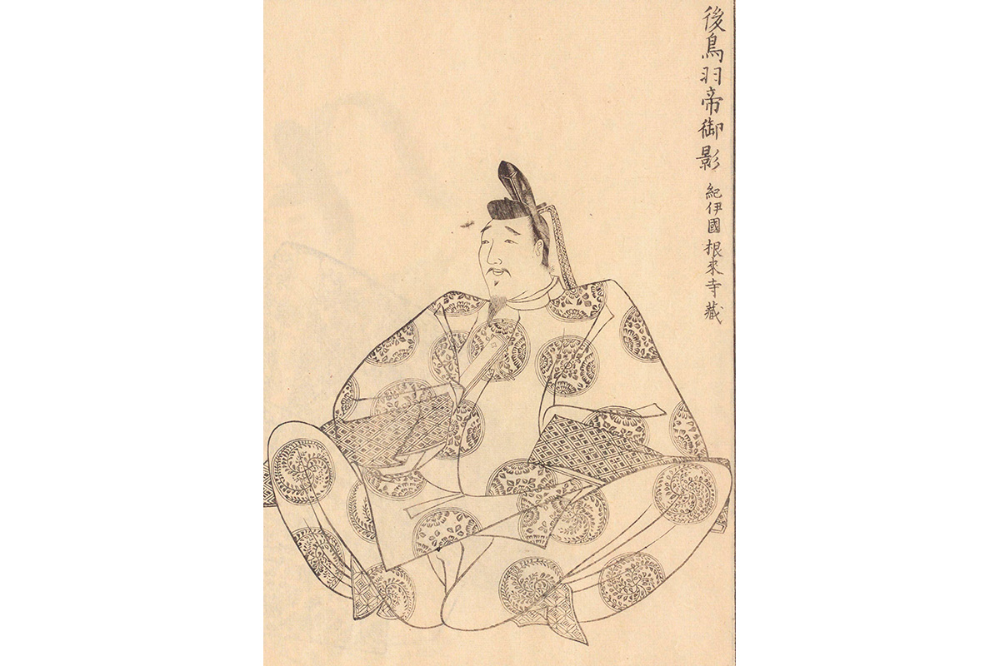

Префектура Симанэ · Оки · история
Император Го-Тоба: как правитель, восставший против сёгунов, оказался на островах Оки

Император Го-Тоба попытался вернуть трону власть, которую забрали воины-сёгуны, и проиграл. Последние годы жизни он провёл в ссылке на островах Оки, и именно там, в Японском море, о нём помнят до сих пор.
Трон
Император при живом императоре
Го-Тоба родился в 1180 году в эпоху, когда страной фактически правил военный род Тайра. Тайра правили, не считаясь с двором. Тогда бывший император Го-Сиракава (1127–1192) возвёл на трон четырёхлетнего внука, сына императора Такакуры.
Так в стране оказалось сразу два императора. Тайра увезли с собой малолетнего императора Антоку (1178–1185), а в столице правил Го-Тоба. Вскоре войска рода Минамото разбили Тайра в морской битве при Данноуре. Антоку погиб в волнах, а вместе с ним на дно ушёл и меч Кусанаги, одна из трёх священных регалий императорской власти. Поэтому Го-Тоба взошёл на трон без полного набора регалий.
Мятеж
Смута годов Дзёкю
После смерти Го-Сиракавы Го-Тоба стал править сам. Отношения с Камакурским сёгунатом, военным правительством на востоке страны, испортились, когда в 1219 году убили третьего сёгуна Минамото-но Санэтомо. Сёгунат всё меньше считался с волей двора, и в 1221 году Го-Тоба приказал покарать Ёситоки Ходзё, регента и настоящего хозяина Камакуры. Так началась смута годов Дзёкю.
Вернуть трону власть не удалось. Вдова первого сёгуна Масако Ходзё обратилась к воинам с призывом, они сплотились вокруг сёгуната, и армия двора была разбита наголову. Сёгунат отправил в ссылку трёх бывших императоров: Го-Тоба на острова Оки, его сына Дзюнтоку на остров Садо, Цутимикадо в провинцию Тоса. Двор лишился земель и былого авторитета.
Хризантема
Мечи с цветком
Го-Тоба был искусен и в воинском деле. Он сам ковал мечи и дарил их приближённым. Император любил хризантемы и украшал ими клинки и одежду. Мечи его работы, отмеченные хризантемой, называют «кику-госаку», и именно с этого увлечения, как считается, началась хризантема на гербе императорского дома.
На Оки Го-Тоба оставался поэтом: он слагал стихи вака и тосковал по столице так, что боялся после смерти стать мстительным духом. Он умер на островах в 1239 году, так и не вернувшись в Киото.
Где увидеть
Следы императора на Оки
Го-Тоба прожил на острове Наканосима, в нынешнем городке Ама, 18 лет. Скромная усадьба, где он жил, стояла чуть севернее нынешнего святилища Оки, которое построили в 1939 году, к 700-летию его смерти.
За главным зданием тропинка уходит на запад к месту, где тело Го-Тоба предали огню. Часть праха увезли в столицу, остальное покоится здесь, за каменной оградой. Род Мураками, который охранял императора в ссылке, ухаживает за этим местом уже 45 поколений.
Святилище Оки
- Адрес
- префектура Симанэ, уезд Оки, Ама, Ама, 1784
- Как добраться
- паромом из Сакаиминато или Ситируи до порта Хисиура на острове Наканосима